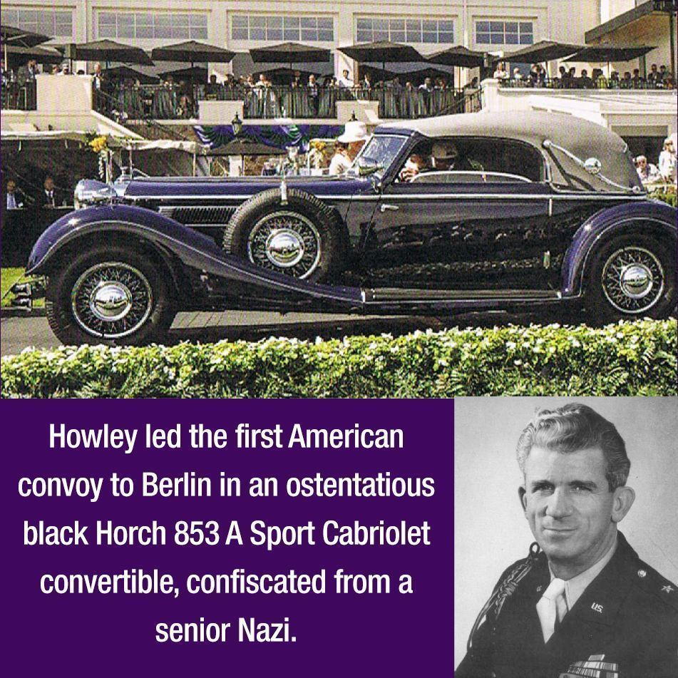

From the Archives · 1921
"Howlin' Mad" Howley, Delta '25 (NYU) and the occupation of Berlin

Larger than life, Col. Frank L. Howley was Deputy American Commandant when four-power cooperation broke down in Berlin. Soviet radio played cowboy music every time they mentioned 'Howley, the Rough Rider from Texas' (he was actually from New Jersey).
June 17, 1945 - A commandeered Horsch Roadster rides to Berlin. Behind this luxury German car follow 120 jeeps and military vehicles; all polished to a high sheen and festooned with American flags. Among their number is a truck laden with 10,000 bottles of whiskey and wine to celebrate the liberation of the city. Leading the convoy riding in the Roadster sat General Frank L. Howley, Delta 1925 (NYU). "It was my intention," said brother Howley, "to make this advance party a spectacular thing."1 As he arrived at the beleaguered city recently conquered by the Soviet Army two enormous portraits loomed down on him: Lenin and Stalin. This ominous greeting would be a sign of things to come for the coming days and years.
In addition to being a decorated General, Frank Howley was a brother of Psi Upsilon. Brother Howley pledged the Delta Chapter in 1921. During his time at NYU he played lacrosse, track & field, and football where he earned the nickname "Golden Toe." 2 After graduating in 1925 with a degree in Economics he established an advertising agency that found success despite America being mired in the Great Depression. Beginning in 1932 Howley was a reserve captain for the U.S. Army; in 1940 he was called to active duty. in 1941, America entered the second World War. Initially Howley headed the Rising Sun School of Aeronautics near Philadelphia. In 1941 he transferred to the Cavalry School at Fort Riley, Kansas, teaching horse tactics and serving as a plans and training officer. Eventually he became executive officer of the Third Cavalry and in 1943 helped convert the unit from a horse unit to a mechanized one. This conversion included training maneuvers; during one fateful exercise Howley broke his back. During his recovery, the Army gave him a choice: go home and sit out the rest of the war, or join civil affairs. Howley chose the latter. While still recovering Howley attended military government school at Camp Custer and in Cleveland.
As the war progressed Howley set up military government in France after D-Day. He later led the first ground party to cross the Elbe river on that fateful convoy to Berlin. While in Berlin the Soviets denied the negotiated terms with the Americans. To solve this impasse "Howlin' Mad" Howley (as his men called him) set up billets and relief stations overnight so that the Soviets awoke to the reality of American occupation in Berlin.
Howley sat at the negotiation table and went on to govern Berlin. In 1950 he retired from the Army a Brigadier General and went on to be the Vice Chancellor of his alma mater, New York University. During the Cold War Howley wrote multiple books and papers on the subject of diplomacy and rivalry with the Soviet Union. His work influenced the course of history. During his life Frank Howley received the U.S. Distinguished Service Medal, the French Legion of Honor, the Croix de Guerre (with three palms), the Belgian Military Cross (first class), the U.S. Legion of Merit, and four campaign battle stars. He married Edith Howley with whom he had four children: Dennis, Delta '58, Peter, Delta '62, William, Delta '63, and daughter Frances. All three of his sons attended New York University and are brothers of Psi Upsilon. He passed away in 1993 at the age of 90.5 ♦
1. https://www.quickanddirtytips.com/education/history/americans-arrive-berlin
2. https://sports.nyhistory.org/tag/golden-toe/
3. https://www.psiuarchives.org/wp-content/uploads/2020/07/The-Diamond-of-Psi-Upsilon_June_1952.pdf
4. https://www.quickanddirtytips.com/education/history/ americans-arrive-berlin
5. https://www.washingtonpost.com/archive/local/1993/08/13/ gen-frank-leo-howley-dies/2ecaace0-b55a-411b-be4d-87c7d95facb6/
6. Frank L. Howley, Berlin Command (New York: G. P. Putnam's Sons, 1950), foreword, 3.